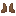

Create: Clothes
附属模组
Create: Clothes
这是什么
来自 mcmod 1.20.1 附属模组清单，共 58 个物品。
命名空间：
createclothes 1.20.1 版本：本页物品与配方直接取自该版本的 jar。全部物品58
Black Bootscreateclothes:black_boots
Brown Bootscreateclothes:brown_boots
Bucket Hatcreateclothes:bucket_hat
Desert Bootscreateclothes:desert_boots
没有工作台/机器配方
Desert Clothcreateclothes:desert_cloth
Desert Helmetcreateclothes:desert_helmet
Desert Pantscreateclothes:desert_pants
Desert Tuniccreateclothes:desert_tunic

Dirt Bootscreateclothes:dirt_boots
没有工作台/机器配方
Dirt Clothcreateclothes:dirt_cloth
Dirt Pantscreateclothes:dirt_pants
Forest Bootscreateclothes:forest_boots
没有工作台/机器配方
Forest Clothcreateclothes:forest_cloth
Forest Helmetcreateclothes:forest_helmet
Forest Pantscreateclothes:forest_pants
Gray Bootscreateclothes:gray_boots
Green Bootscreateclothes:green_boots
Mesa Bootscreateclothes:mesa_boots
没有工作台/机器配方
Mesa Helmetcreateclothes:mesa_helmet
Mesa Pantscreateclothes:mesa_pants
Officer Capcreateclothes:officer_cap
Officer Tuniccreateclothes:officer_tunic
Plains Bootscreateclothes:plains_boots
没有工作台/机器配方
Plains Clothcreateclothes:plains_cloth
Plains Helmetcreateclothes:plains_helmet
Plains Pantscreateclothes:plains_pants
Savanna Bootscreateclothes:savanna_boots
没有工作台/机器配方
Savanna Clothcreateclothes:savanna_cloth
Savanna Helmetcreateclothes:savanna_helmet
Savanna Pantscreateclothes:savanna_pants
Snow Bootscreateclothes:snow_boots
没有工作台/机器配方
Snow Clothcreateclothes:snow_cloth
Snow Coatcreateclothes:snow_coat
Snow Helmetcreateclothes:snow_helmet
Snow Pantscreateclothes:snow_pants
Sturdy Clothcreateclothes:sturdy_cloth
Taiga Bootscreateclothes:taiga_boots
没有工作台/机器配方
Taiga Clothcreateclothes:taiga_cloth
Taiga Helmetcreateclothes:taiga_helmet
Taiga Pantscreateclothes:taiga_pants
Water Bootscreateclothes:water_boots
没有工作台/机器配方
Water Clothcreateclothes:water_cloth
Water Helmetcreateclothes:water_helmet
Water Pantscreateclothes:water_pants
Water Tuniccreateclothes:water_tunic